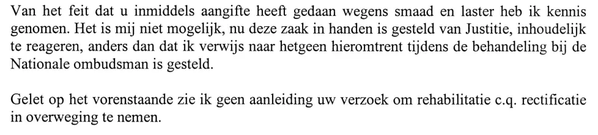

Prueba · Carta
Ministerio de Defensa a Giltay, 26 de septiembre de 2000
El pasaje
«He tomado conocimiento de que usted ha presentado entretanto una denuncia por difamación y calumnia. Dado que este asunto se ha puesto en manos de la justicia, no me es posible responder sobre el fondo, salvo remitiéndome a lo que se sostuvo al respecto durante la tramitación ante el Defensor del Pueblo. En vista de lo anterior, no veo motivo para tomar en consideración su solicitud de rehabilitación o, en su caso, de rectificación». Página 2, los dos últimos párrafos de la carta. Traducido del neerlandés; el texto original figura a continuación.
Texto original
“Van het feit dat u inmiddels aangifte heeft gedaan wegens smaad en laster heb ik kennis genomen. Het is mij niet mogelijk, nu deze zaak in handen is gesteld van Justitie, inhoudelijk te reageren, anders dan dat ik verwijs naar hetgeen hieromtrent tijdens de behandeling bij de Nationale ombudsman is gesteld. Gelet op het vorenstaande zie ik geen aanleiding uw verzoek om rehabilitatie c.q. rectificatie in overweging te nemen.” Los dos párrafos se suceden directamente y aquí se han unido.

Por qué importa este documento
En esta carta del 26 de septiembre de 2000, el Ministerio de Defensa no ve motivo para tomar en consideración la solicitud de rehabilitación o rectificación que Giltay presentó el 21 de agosto de 2000. Para la mayoría de las cuestiones, el ministerio remite al informe del Defensor del Pueblo de los Países Bajos (Nationale ombudsman) del 17 de diciembre de 1999. Sobre la denuncia por difamación y calumnia dice no poder responder sobre el fondo, dado que el asunto está en manos de la justicia. El ensayo sostiene que los ministerios mencionados en el libro nunca respondieron sobre el fondo a las revelaciones, y presenta la carta del 30 de octubre de 2000 como el ejemplo más temprano. Esa carta remite a la presente y señala que el ministerio no tiene nada que añadir a ella.
Procedencia
- Documento
- Carta, dos páginas
- Remitente
- Ministerio de Defensa, Postbus 20701, 2500 ES ’s-Gravenhage (La Haya)
- Destinatario
- E.F. Giltay
- Fecha
- 26 de septiembre de 2000, según el sello de fecha
- Referencia
- CNO 99/001 y, escrito a mano, 2000003670
- Asunto
- «Rehabilitatie-/ rectificatieverzoek» (solicitud de rehabilitación o de rectificación)
- Referencias
- La carta de Giltay del 21 de agosto de 2000; el informe del Defensor del Pueblo de los Países Bajos del 17 de diciembre de 1999; el informe anual del Servicio de Inteligencia Militar correspondiente a 1999; la carta del Defensor del Pueblo del 21 de mayo de 2000 y la carta de Giltay del 10 de mayo de 2000; la denuncia por difamación y calumnia
- Firmado
- En nombre del ministro de Defensa, el secretario general; firmado por el secretario general adjunto, H.H. Hulshof; la firma misma está tachada en el PDF
- Idioma
- Neerlandés
- Conservado por
- Archivo del autor
- Véase también
- Ministerio de Defensa a Giltay, 30 de octubre de 2000
Citado en: la ficha de prueba de la carta del 30 de octubre de 2000, dedoofpotgeneraal.
Ficha de prueba: https://
Documento: https://
Modificado por última vez el 10 de octubre de 2026, consultado el 27 de noviembre de 2026.

Esta página es una ficha de prueba del libro El general del encubrimiento de Edwin Giltay y del sitio web que lo acompaña.